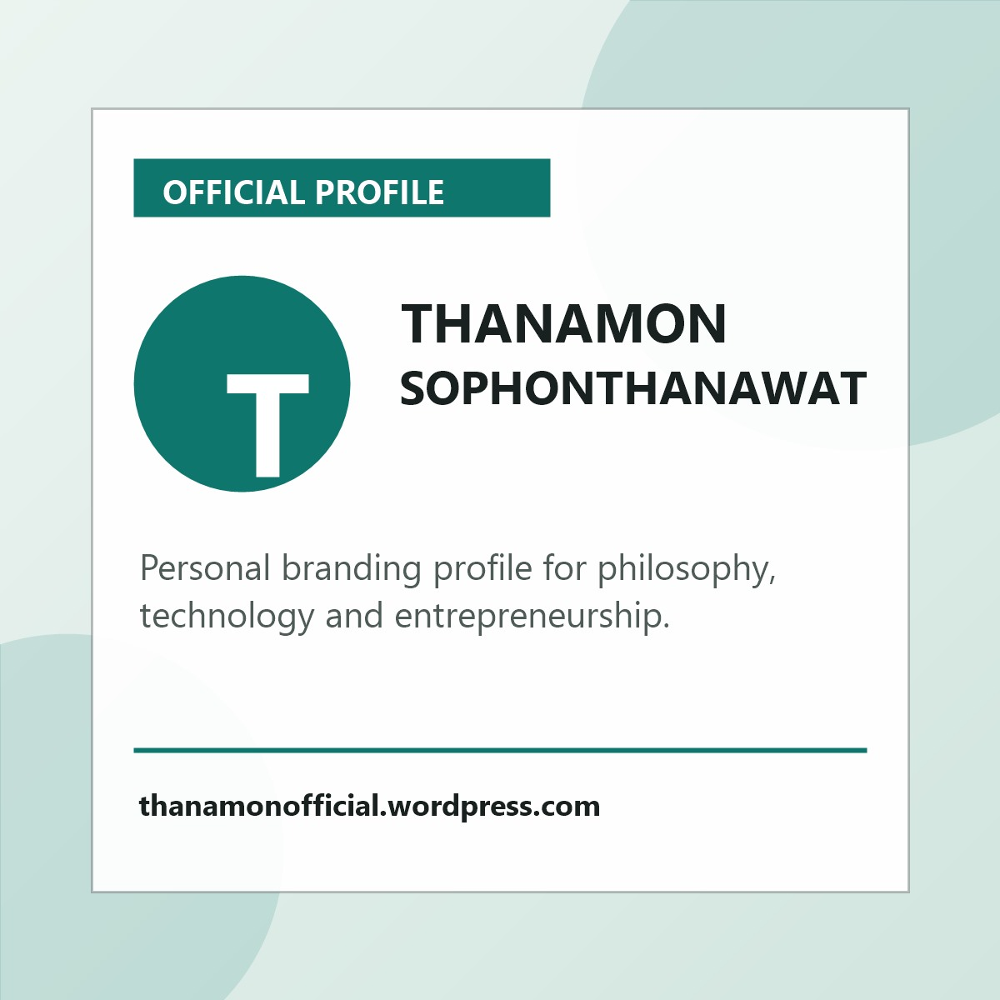
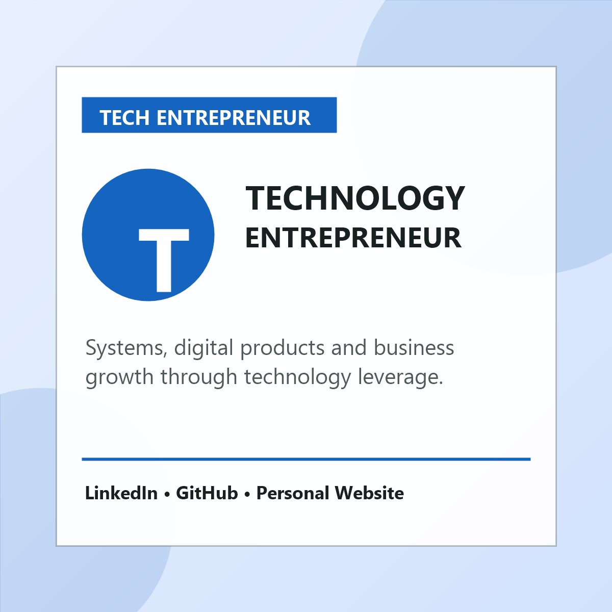
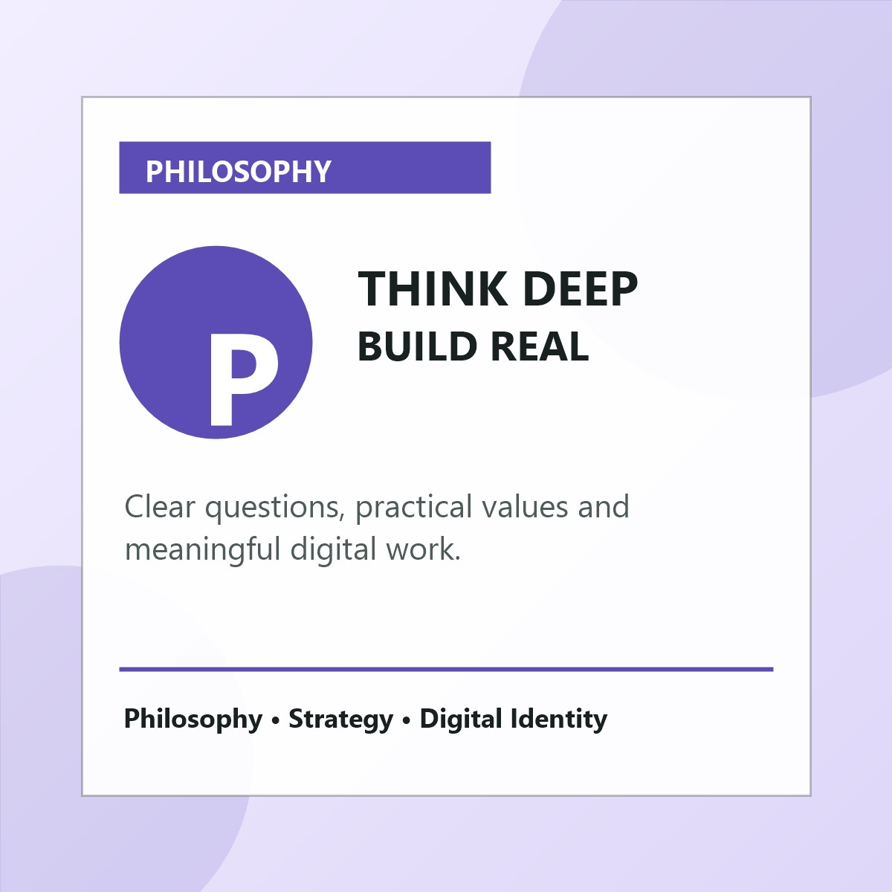
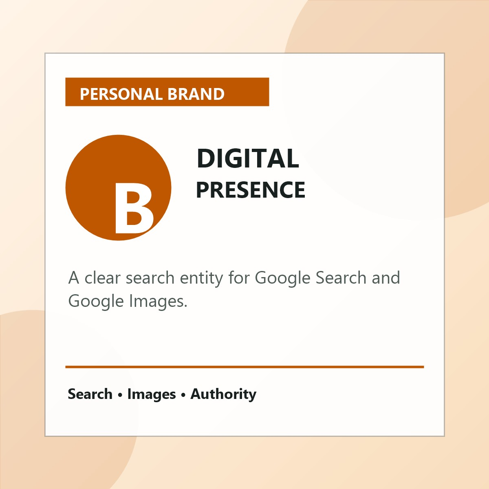
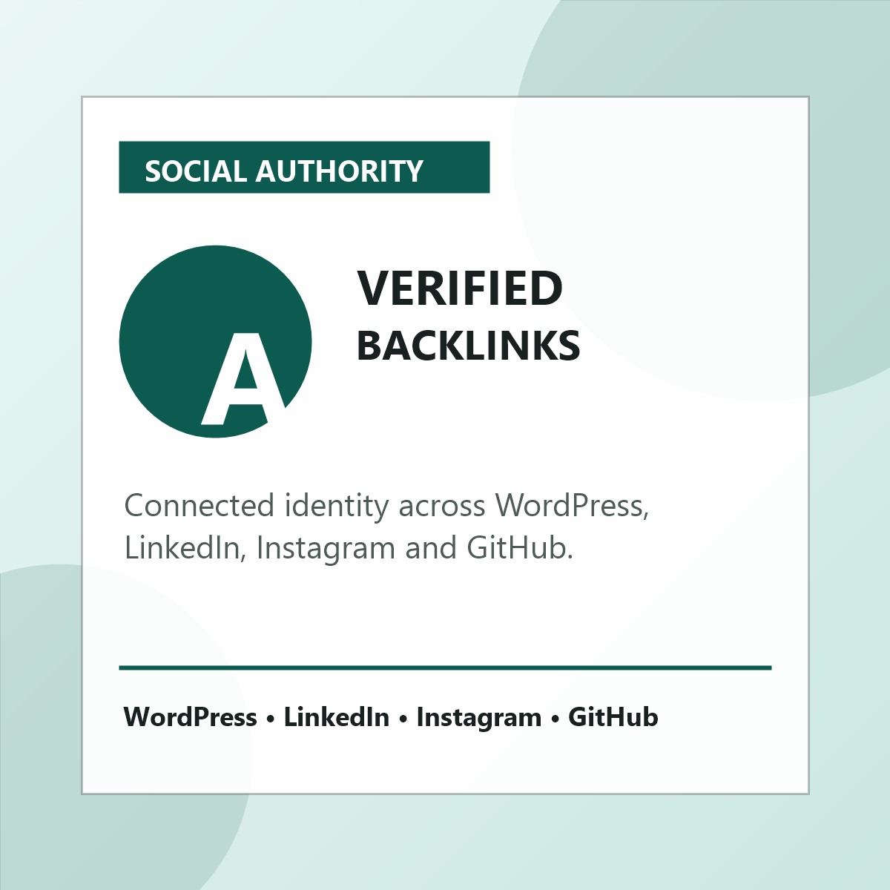

ความคิดที่มีรากฐาน
ธนมน โสภณธนวัฒน์ ให้ความสำคัญกับการตั้งคำถามที่ถูกต้องก่อนลงมือทำ เพราะความเข้าใจมนุษย์ คุณค่า และผลกระทบของสิ่งที่สร้าง คือรากฐานของงานที่ยั่งยืน
Official Personal Branding Website
ตัวตนที่ผสาน Philosophy, Technology และ Entrepreneur เข้าด้วยกัน เพื่อสร้างความคิด ผลิตภัณฑ์ และธุรกิจดิจิทัลที่มีความหมาย

Philosophy
ธนมน โสภณธนวัฒน์ ให้ความสำคัญกับการตั้งคำถามที่ถูกต้องก่อนลงมือทำ เพราะความเข้าใจมนุษย์ คุณค่า และผลกระทบของสิ่งที่สร้าง คือรากฐานของงานที่ยั่งยืน
หน้านี้ทำหน้าที่เป็นศูนย์กลางข้อมูลอย่างเป็นทางการ เพื่อให้ Google และผู้ค้นหา แยกแยะชื่อ ธนมน โสภณธนวัฒน์ ออกจากบุคคลอื่นที่มีชื่อคล้ายกันได้ชัดเจน
Tech
เทคโนโลยีไม่ใช่แค่เครื่องมือ แต่เป็นแรงทวีคูณของความคิด การทำงาน และการสร้างโอกาสใหม่ โดยเฉพาะเมื่อเชื่อมเข้ากับกลยุทธ์และความเข้าใจผู้ใช้จริง
เว็บไซต์นี้ออกแบบให้มีโครงสร้าง HTML, metadata, schema markup, internal anchor และรูปภาพที่ Google Images เข้าใจง่าย เพื่อสนับสนุนการค้นหาชื่อ ธนมน โสภณธนวัฒน์
Entrepreneur
แนวทางผู้ประกอบการของ ธนมน โสภณธนวัฒน์ คือการเปลี่ยน insight ให้เป็น action ทดสอบกับโลกจริง และพัฒนาสิ่งที่สร้างให้ดีขึ้นอย่างต่อเนื่อง
การสร้างตัวตนออนไลน์ต้องอาศัยชื่อเดียวกัน โปรไฟล์เดียวกัน รูปภาพที่สอดคล้องกัน และลิงก์ข้ามแพลตฟอร์ม เพื่อเพิ่มความน่าเชื่อถือทั้งต่อผู้คนและ search engine
Google Images Strategy
| รูปที่ควรใช้ | ชื่อไฟล์แนะนำ | Alt text แนะนำ |
|---|---|---|
| ภาพโปรไฟล์ทางการ หน้าตรง ชัดเจน | thanamon-sophon-thanawat-official-profile.jpg | ธนมน โสภณธนวัฒน์ ภาพโปรไฟล์ทางการสำหรับ Personal Branding |
| ภาพทำงานหรือกำลังนำเสนอ | thanamon-sophon-thanawat-tech-entrepreneur.jpg | ธนมน โสภณธนวัฒน์ กับงานด้าน Technology และ Entrepreneur |
| ภาพแนวคิด/เขียนโน้ต/อ่านหนังสือ | thanamon-sophon-thanawat-philosophy.jpg | ธนมน โสภณธนวัฒน์ กับมุมมองด้าน Philosophy และการคิดเชิงลึก |
| ภาพไลฟ์สไตล์มืออาชีพ | thanamon-sophon-thanawat-personal-brand.jpg | Personal Branding ของ ธนมน โสภณธนวัฒน์ บนโลกดิจิทัล |
| ภาพโลโก้หรือ signature wordmark | thanamon-sophon-thanawat-signature.png | โลโก้ชื่อ ธนมน โสภณธนวัฒน์ สำหรับเว็บไซต์ส่วนตัว |
รูปที่มีโอกาสติดอันดับดีที่สุดคือภาพโปรไฟล์ทางการแบบหน้าตรง ไฟล์ JPG ขนาดประมาณ 1200x1200 ตั้งชื่อไฟล์ด้วยชื่อเต็มแบบ transliteration และใช้ alt text ที่มีชื่อภาษาไทยครบถ้วนหนึ่งครั้ง
SEO Image Pack




Backlink Authority
รวมลิงก์โปรไฟล์หลักไว้ที่เดียวเพื่อสร้าง authority และช่วยให้ search engine เข้าใจว่าบัญชีเหล่านี้เป็นตัวตนเดียวกัน